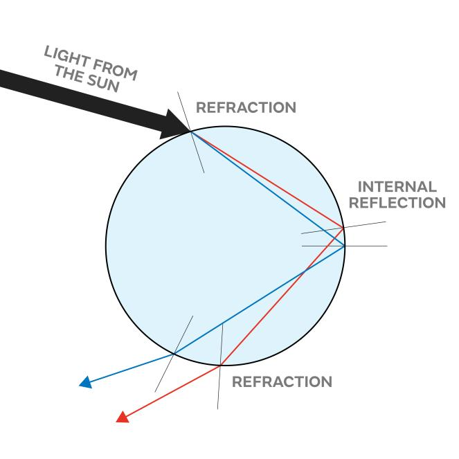
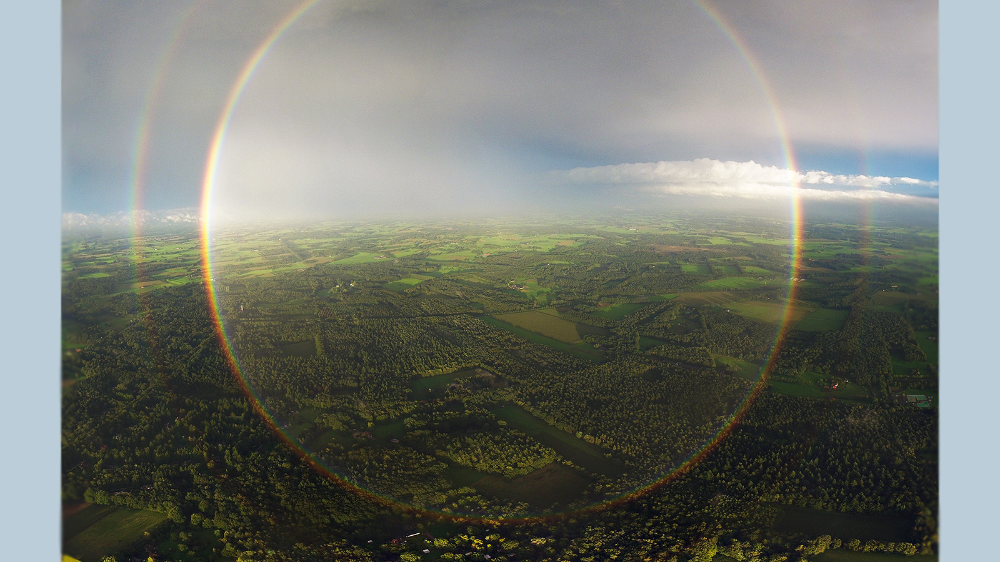

July 3, 2023
Pavle Ignjatović
How and why do rainbows form?
Behind one of the most colorful events in nature stands nothing more than couple of physics laws, but some people still do not understand them completelly. If you are among them, I am sure that you will be able to explain this phenomenon in just a few minutes.
Because water is denser then air, light passing through raindrop slows down and changes direction, exiting at different angle. This is called refraction. Sunlight (which appears white to us) is made of different colors, each with its own wavelength, and slowing by different amounts. This leads to dispersion - process of separating white light to all colors of visible spectrum (red, orange, yellow, green, blue, indigo, and violet).

Refraction. Credits: https://www.metoffice.gov.uk/weather/learn-about/weather/optical-effects/rainbows/how-are-rainbows-formed
The image shows simplified process of dispersion - separating colors of visible spectrum from white light, with reflection being just light "bouncing" of the drop from the inside.
Interesting things to notice:
- If an observer is att high enough altitude, his antisolar point is also raised from the ground. That leads to the rainbow forming as a full circle!
- As no two humans can stand in the same place, they can not have the same antisolar point, so their rainbows are in different places. This means that if you see the rainbow, no one else can see the same one, it is only yours!

Circular rainbow. Credits: https://science.howstuffworks.com/nature/climate-weather/atmospheric/rainbows-are-circular.htm
- refraction - changing light's direction and speed when ambience density changes
- reflection - light bouncing of a surface
- dispersion - separating colors that make up white light
- antisolar point - point directly oposite to the sun